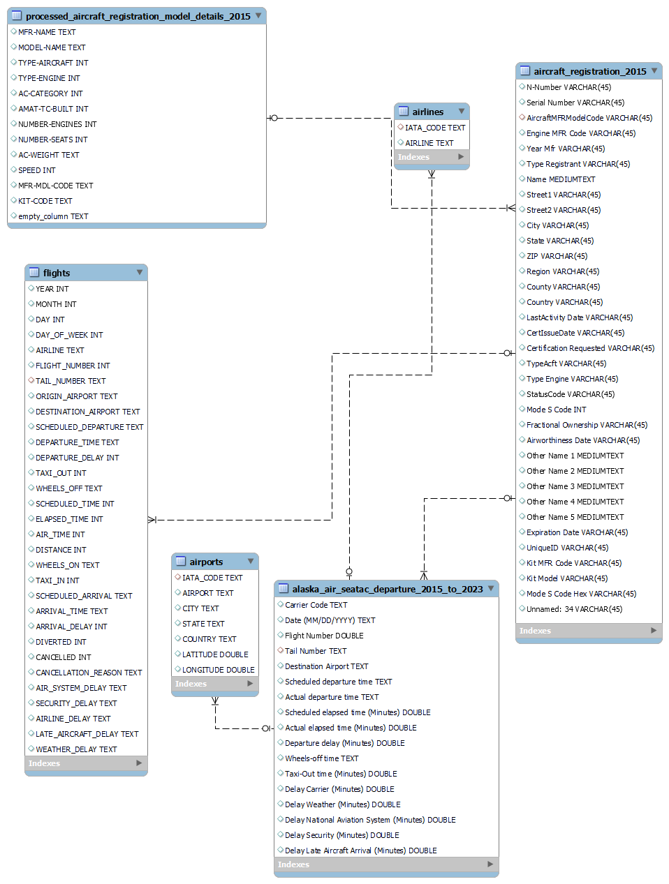

Analysis of Alaska Airlines Carrier Delays at Seattle-Tacoma International Airport
Background
Seattle-Tacoma International Airport, colloquially known as Sea-Tac, is a pivotal hub in the aviation network of the Pacific Northwest and plays a critical role in the global air transport infrastructure. As the primary commercial airport serving Seattle and Tacoma, it is an essential gateway for both passenger and cargo traffic. Its strategic location, coupled with a robust array of domestic and international flights, positions Sea-Tac as a vital nexus connecting various global destinations.
For Alaska Airlines, Seattle-Tacoma International Airport is more than just a significant hub; it is the heart of its operations. As the largest carrier operating out of Sea-Tac, Alaska Airlines has a substantial portion of its fleet and flights concentrated here. The airport serves as the primary base for its extensive network of routes, especially those connecting major cities across the United States, and plays a crucial role in Alaska Airlines' growth strategy and market presence. The efficiency and functionality of Sea-Tac directly impact Alaska Airlines' operational success, customer satisfaction, and competitive standing in the airline industry.
Objective
By leveraging comprehensive data spanning from 2015 to 2023, the study aims to identify key factors contributing to operational inefficiencies and propose actionable insights to enhance punctuality and service quality. Given the significant role of Sea-Tac in Alaska Airlines' operations, this analysis is particularly relevant for strategizing improvements in the airline's performance and customer experience.
Areas of Focus
In the years before COVID, Alaska Airlines grew rapidly out of their homebase of Seattle-Tacoma International Airport. This hasn’t been without its challenges. Unfortunately, Carrier Delays have steadily increased and continue to trend upward.
Alaska Airlines Fleet
Intuitively it makes sense that assessing the airplanes themselves is a great place to investigate first when assessing carrier delays as mechanical problems are a primary cause of carrier delays.
There are two main manufacturers Alaska Airlines has used planes from in the past decade: Boeing and Airbus. Over time, the fleet composition has become more centered on Boeing.
Based on Carrier Delays, this was a wise decision as we can see in this plot.
Day of the Week
Time of Day
When we examine how the timing of a flight correlates with delays, taking into account various years and destination airports, we observe significant variability.
Handling Mixed-Width Format Files: A significant challenge in preprocessing involved the 2015 Aircraft Registration Database from the Federal Aviation Administration, which was presented in a mixed-width format. This format combines elements of fixed-width and variable-width fields, requiring specialized parsing techniques. Python was instrumental in accurately processing these files, ensuring that each data field was correctly identified and extracted.
Data Cleaning: Particular attention was given to cleaning datetime values using Python's libraries. This step was crucial to maintain the integrity of time-oriented data, particularly important in the context of flight delays and scheduling.
Preparing Data for SQL Database: Post-cleaning, Python scripts were used to restructure the data into a format suitable for SQL database integration. This transformation was key to ensuring that the data was stored in an organized, accessible manner.
SQL Database for Data Storage

Local Database Setup: A comprehensive SQL database was set up locally to house the processed data. This database served as the primary storage for the extensive dataset, including flight details, airport coordinates, and the nuanced aircraft registration information.
Efficient Data Handling: The SQL database was pivotal for effective data management, facilitating advanced querying, systematic updating, and efficient retrieval of diverse datasets for analysis.
Tableau for Data Analysis and Visualization
Seamless Data Integration: The prepared data, stored in the SQL database, was seamlessly integrated into Tableau. This integration enabled a fluid transfer of information from the storage database to the visualization platform.
Interactive Dashboard Creation: Utilizing Tableau's dynamic visualization capabilities, an interactive dashboard was developed. This dashboard served as a central tool for visual data exploration, enabling the analysis of complex patterns and trends in airline delays.
Deriving Analytical Insights: Tableau played a critical role in converting complex datasets into clear, actionable insights. Its sophisticated analytical tools allowed for the extraction of significant patterns, aiding in the comprehensive understanding of the factors contributing to airline delays.